SFSP/ARAS Reports
This page documents the report exports available for SFSP/ARAS centers: Served Meals Report, Bulk Attendance Last Modified, and Pickup/Delivery Tracking (Satellite Report).
Served Meals Report
Export functionality that generates a ServedMealsReport.xlsx file. Available from three different pages, each with different behavior.
Export Contexts
| Context | Role | Export Trigger | Has Popup? | Has Filters? |
|---|---|---|---|---|
| Center Daily Attendance/Served Meals | Sponsor | Export button | No | No -- all columns shown |
| Bulk Entry page | Sponsor | Export button | Yes -- select center(s), From/To | Yes -- hidden filter columns hidden in report |
| Non-LA/LA SFSP/ARAS A&MC page | Center/IC | Export button | Yes -- select From/To | Yes -- hidden filter columns hidden in report |
Navigation
Center Daily Attendance/Served Meals (Sponsor):
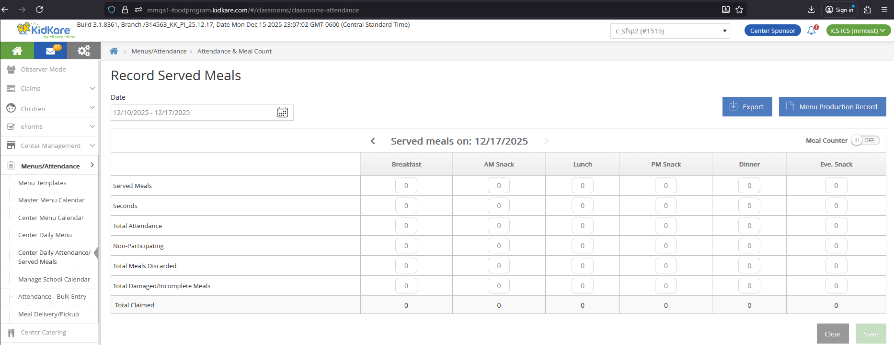
Bulk Entry (Sponsor):
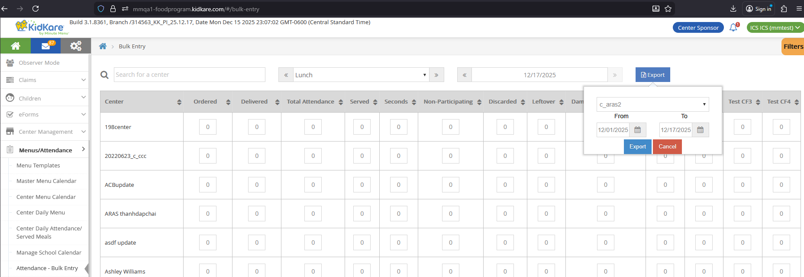
A&MC page (Non-LA Center/IC):
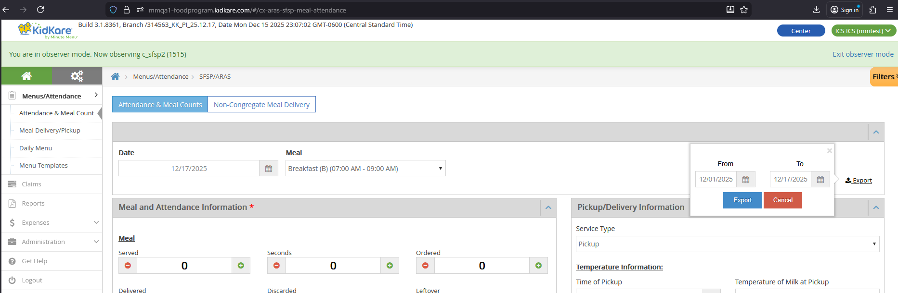
A&MC page (LA Center/IC):
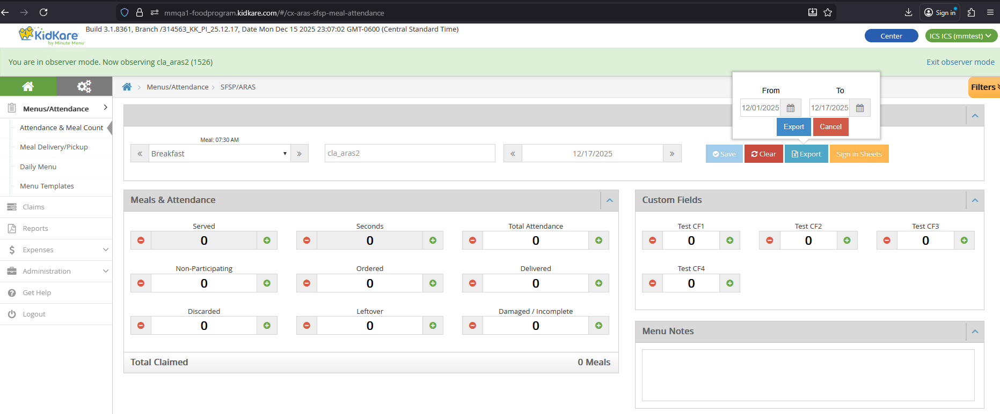
Report File
| Property | Value |
|---|---|
| File name | ServedMealsReport.xlsx |
| Title line | "Served Meals Report" |
| Subtitle lines | Sponsor legal name, date range (From - To) |
Meal columns
{Meal} in column names means: Breakfast, AM Snack, Lunch, PM Snack, Dinner, Eve. Snack. If a center does not have a meal approved but has records for that meal, the columns still display.
Columns Always Shown
These columns appear in all three export contexts and do not depend on Filters.
| Column | DB Table | DB Column |
|---|---|---|
| Center Name | CENTER |
center_name |
| Center Number | CENTER |
center_number |
| Attendance Date | SFSP_ATTENDANCE |
attendance_date |
| {Meal} Count | SFSP_ATTENDANCE_ITEM |
meal_count |
| {Meal} Saved | SFSP_ATTENDANCE |
mod_date_time |
| Comments | SFSP_ATTENDANCE |
comments |
Additional Columns for Sponsor Center Daily Attendance
The Center Daily Attendance/Served Meals page always shows these additional columns. They do not depend on Filters because this page has no Filters.
| Column | DB Table | DB Column |
|---|---|---|
| {Meal} Seconds | SFSP_ATTENDANCE |
second_meal_count |
| {Meal} Claimed | Calculated | SFSP_ATTENDANCE_ITEM.meal_count + SFSP_ATTENDANCE.second_meal_count |
| {Meal} Attendance | SFSP_ATTENDANCE |
total_attendance |
| {Meal} Non Participating | SFSP_ATTENDANCE |
non_participating_count |
| {Meal} Total Meals Discarded | SFSP_ATTENDANCE |
leftover |
| {Meal} Total Damaged/Incomplete Meals | SFSP_ATTENDANCE |
waste |
Filter-Dependent Columns (Bulk Entry and A&MC)
These columns only appear if the corresponding filter is visible (not hidden). They apply to both the Bulk Entry and Non-LA/LA A&MC contexts.
| Column | DB Table | DB Column |
|---|---|---|
| {Meal} Seconds | SFSP_ATTENDANCE |
second_meal_count |
| {Meal} Claimed | Calculated | SFSP_ATTENDANCE_ITEM.meal_count + SFSP_ATTENDANCE.second_meal_count |
| {Meal} Attendance | SFSP_ATTENDANCE |
total_attendance |
| {Meal} Non Participating | SFSP_ATTENDANCE |
non_participating_count |
| {Meal} Total Meals Discarded | SFSP_ATTENDANCE |
leftover |
| {Meal} Total Damaged/Incomplete Meals | SFSP_ATTENDANCE |
waste |
| {Meal} Total LeftOver | SFSP_ATTENDANCE |
leftover_ext |
| {Meal} Total Ordered | SFSP_ATTENDANCE |
ordered |
| {Meal} Total Delivered | SFSP_ATTENDANCE |
delivered |
| {Meal} Custom 1, 2, 3, 4 | SFSP_ATTENDANCE_CUSTOM_VALUE |
custom_value |
For details on Custom 1-4 columns, see Custom Fields.
A&MC-Specific Columns (Non-LA/LA Only)
These columns only appear in the Non-LA/LA SFSP/ARAS Attendance & Meal Counts export. They are filter-dependent.
| Column | DB Column | Notes |
|---|---|---|
| {Meal} Service Type | service_type |
|
| {Meal} Time of P/D | service_time |
|
| {Meal} Temperature of Milk at P/D | milk_temperature |
|
| {Meal} Temperature of Meal at P/D | meal_temperature |
|
| {Meal} Temperature of Meal at Service | service_meal_temperature |
|
| {Meal} Print Name | print_name |
|
| {Meal} E-Signature | -- | Shows "Signed" if signature exists, "Not Sign" otherwise |
| {Meal} Comments/Concerns | service_note |
Bulk Attendance Last Modified Report
State User report that shows when sponsors last updated attendance data from the Bulk Entry page.
Access
Only State Users can access this report. Sponsor, Center, and IC users cannot.
| State | Navigation | Has Program Type Dropdown? |
|---|---|---|
| LA/OK | Reports > SFSP/ARAS > Attendance > Bulk Attendance - Last Modified | Yes -- Regular, SFSP, ARAS |
| Other states | Reports > Attendance > Bulk Attendance - Last Modified | No |
LA/OK State User view (with Program Type dropdown):
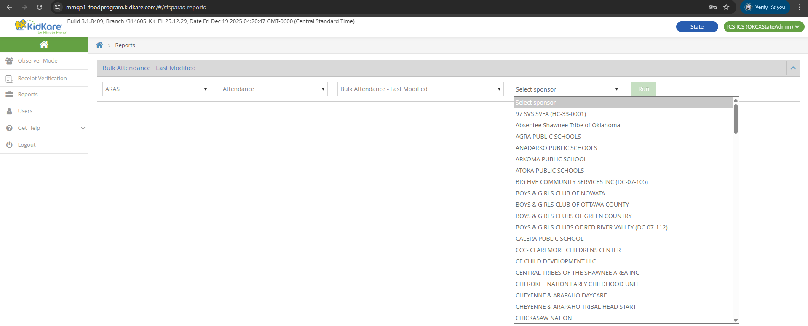
Other State User view (no Program Type dropdown):
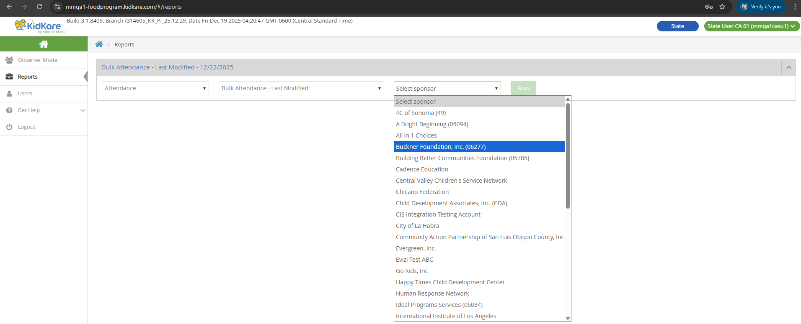
Controls
| Control | Behavior |
|---|---|
| Select Sponsor | Single selection. Shows all sponsors in the same state as the logged-in State User. |
| Date | Default: current date. Cannot type a date -- select only. Future days are disabled. |
| Select Meal | Default: "Select Meal" (LA/OK) or empty (other states). Single selection. Options: Breakfast, AM Snack, Lunch, PM Snack, Dinner, Eve. Snack. |
Report File
| Property | Value |
|---|---|
| File name | BulkAttendanceLastModified_{sponsor_legal_name}_{date}.xlsx |
| Title | "Bulk Attendance - Last Modified Report" |
| Subtitle lines | Sponsor legal name, selected date, selected meal |
Columns
Data comes from SFSP_MEAL_SERVED_BULK_ENTRY_HISTORY.
| Column | DB Field | Notes |
|---|---|---|
| Center Name | CENTER.center_name |
Joined via center_id |
| Center Number | CENTER.center_number |
Joined via center_id |
| Last Modified Date Time for Served Meals | create_date_time (where meal_serving = 1) |
e.g., 12/22/2025 10:22:30 AM |
| Last Modified Date Time for Seconds | create_date_time (where meal_serving = 2) |
|
| User Id | create_login_id = USER.user_id |
|
| Full Name | -- | Empty for Sponsor Admin; {Last Name} {First Name} for Sponsor Staff |
| Timezone | time_zone |
e.g., UTC+07:00 |
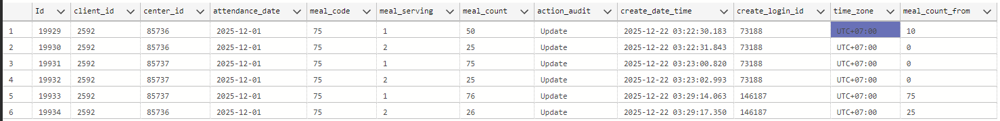
N/A values
"N/A" means the sponsor has not updated attendance or meal counts from the Bulk Entry page.
Key Behavior
- Only changes to Served and Seconds values create history records. Changes to other fields (such as attendance, comments) do not create records.
- Setting Served or Seconds to 0 still creates a history record.
- Each row shows the most recent change for that center, date, and meal combination.
Example: A Sponsor Admin records Breakfast for two centers. The report shows two rows with the Admin's User Id and empty Full Name.
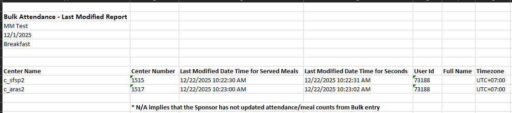
Later, a Sponsor Staff updates Served for one center and Seconds for the other. The report adds two new rows with the Staff's User Id and Full Name. Each row only has a timestamp for the field that was changed -- the other field shows N/A.
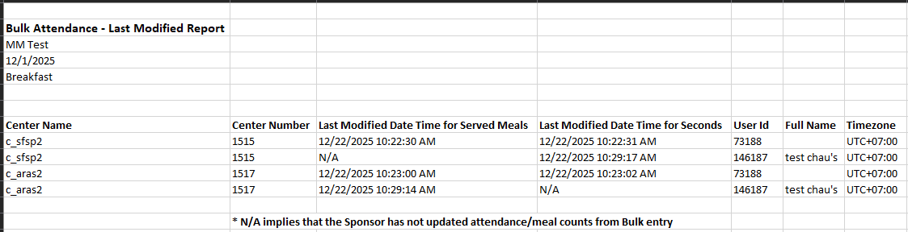
Pickup/Delivery Tracking (Satellite Report)
Report for viewing and downloading satellite delivery/pickup forms as PDF files.
Data prerequisite
Data for this report is created through the Meal Delivery & Pickup feature. Without delivery/pickup records, the report has no data to display.
Access by Role
| Aspect | LA/OK State User | Sponsor | Center/IC |
|---|---|---|---|
| Navigation | Reports > SFSP/ARAS > Menus > Pickup/Delivery Tracking | Reports > SFSP/ARAS > Meals & Attendance > Pickup/Delivery Tracking | Reports > SFSP/ARAS > Meals & Attendance > Pickup/Delivery Tracking |
| Sponsorship Type dropdown | Yes -- Sponsored, Independent | N/A | N/A |
| Sponsor/IC selection | Yes -- filtered by state | N/A | N/A |
| Center selection | Yes -- multi-select, after sponsor selected | Yes | N/A |
| From/To | Date picker (past, current, future). Run disabled if From > To. | Same | Same |
Controls
State User has additional controls:
| Control | Behavior |
|---|---|
| Sponsorship Type | Sponsored or Independent. Determines whether Sponsor or IC dropdown shows. |
| Sponsor dropdown | Shows all sponsors in the same state as the State User. Single selection. Only if Sponsorship Type = Sponsored. |
| IC dropdown | Shows all SFSP ICs (if SFSP) or ARAS ICs (if ARAS). Single selection. Only if Sponsorship Type = Independent. |
| Center dropdown | Shows after selecting a sponsor. Lists SFSP or ARAS centers. Multi-select. |
| From/To | Can select or type a date. Past, current, and future dates allowed. Run button disabled if From > To. |
State User behavior is the same as Sponsor after selecting the sponsor/IC.
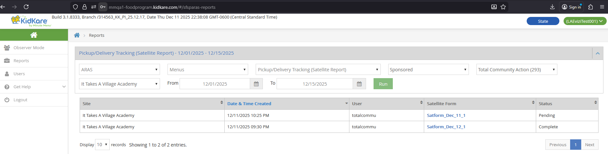
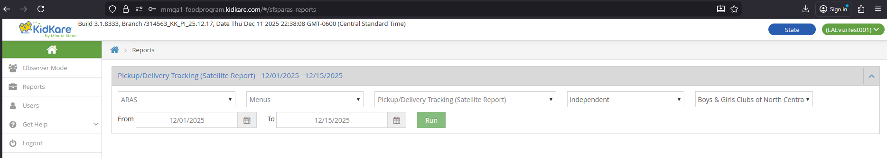
Sponsor Behavior
- Select center(s), From, and To dates. Click Run.
- A data table displays with results.
- Click a Satellite Form hyperlink to open the PDF in a new browser tab.
- The PDF can be downloaded or printed.
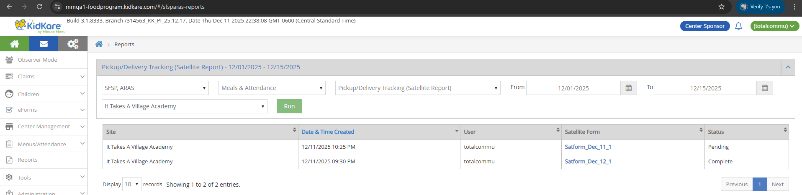
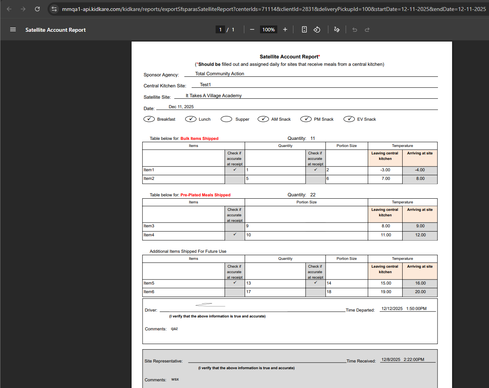
Center/IC Behavior
- Select From and To dates. Click Run.
- A PDF file is automatically downloaded and opens in a new browser tab.
Center view:
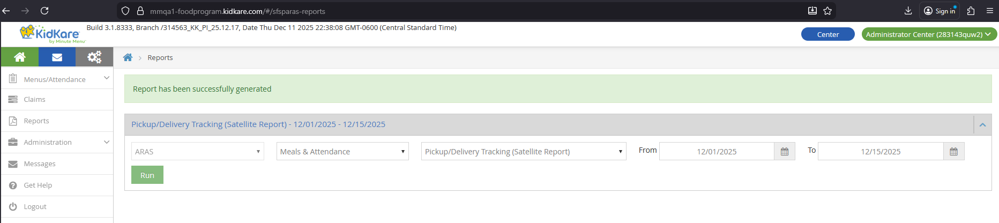
IC view:
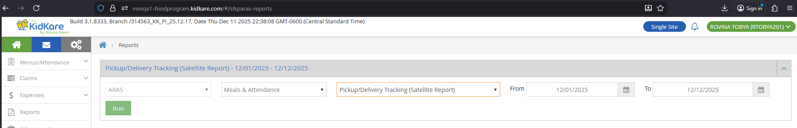
Data Table Columns (Sponsor and State User)
| Column | Source | Notes |
|---|---|---|
| Site | CENTER.center_name |
|
| Date & Time Created | SFSP_DELIVERY_PICKUP.create_date_time |
|
| User | USER.username (Admin) or STAFF name (Staff) |
Center Admin shows "Administrator Center" |
| Satellite Form | Satform_{Month}_{dd}_{order} |
e.g., Satform_Dec_22_1, Satform_Dec_22_2 |
| Status | Based on signature lock state | Pending = 0 or 1 signatures; Complete = 2 signatures (locked) |
The table shows 10 records per page with Previous/Next pagination.
PDF File Names
| Role | File Name |
|---|---|
| Sponsor / State User | exportSfsparasSatelliteReport.pdf |
| Center / IC | SatelliteAccountReport_{yyyy-mm-dd}-{number}.pdf (e.g., SatelliteAccountReport_2025-12-01-1.pdf) |
PDF endpoint
Sponsor and State User PDFs are generated via /kidkare/reports/exportSfsparasSatelliteReport.